Już w starożytności znana była właściwość jednego z gatunków rudy żelaznej, zwanej magnetytem, polegająca na przyciąganiu kawałków stali. Zjawisko to nazwano magnetyzmem. Natomiast opisane ciało - magnesem trwałym.
Już w starożytności znana była właściwość jednego z gatunków rudy żelaznej, zwanej magnetytem, polegająca na przyciąganiu kawałków stali. Zjawisko to nazwano magnetyzmem. Natomiast opisane ciało - magnesem trwałym.
Pole magnetyczne
Na przykładzie magnesu możemy rozpatrzyć pole magnetyczne:
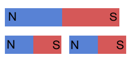
|
Istnieją dwa bieguny magnesu: północny i południowy. Nie da się rozdzielić biegunów magnetycznych. Charakterystycznymi wielkościami dla pola magnetycznego są:
- natężenie pola magnetycznego
- indukcja pola magnetycznego (wyrażana w teslach)
- przenikalność magnetyczna ( )
Linie pola magnetycznego są zawsze liniami zamkniętymi.
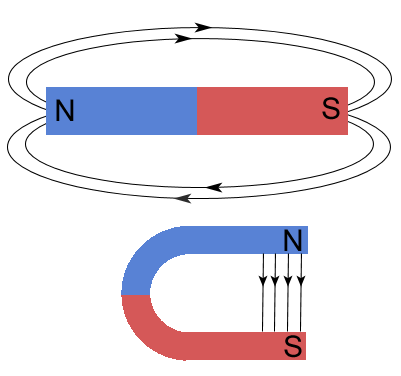
Bieguny jednoimienne odpychają się; różnoimienne - przyciągają się.
W 1820 roku Oersted odkrył oddziaływanie magnetyczne przewodnika, przez który przepływa prąd. Ustawił on przewodnik koło igły magnetycznej. Po włączeniu prądu w przewodniku igła odchyliła się. Świadczy to o tym, że przewodnik z prądem jest źródłem pola magnetycznego.
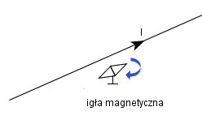
Natężenie pola wytwarzanego przez prostoliniowy przewodnik:
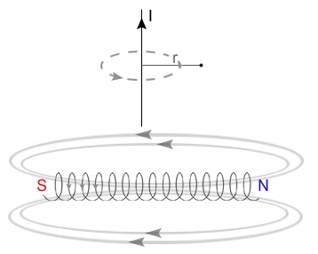
Natężenie pola wytwarzanego wewnątrz zwojnicy:
I - natężenie prądu
d - długość zwojnicy
n - liczba zwojów
Magnetyki
|
W zależności od specyfiki dzielą się na trzy podstawowe grupy:
- diamagnetyki (o względnej przenikalności magnetycznej mniejszej od 1)
- paramagnetyki (o względnej przenikalności magnetycznej nieco większej od 1)
- ferromagnetyki (o bardzo dużej dodatniej liczbie względnej przenikalności magnetycznej)
W celu scharakteryzowania stanu namagnesowania substancji używamy wielkości zwanej podatnością magnetyczną. Opisuje ona zdolność danej substancji do zmian namagnesowania pod wpływem zewnętrznego pola magnetycznego.
k - podatność magnetyczna
I - namagnesowanie
H - natężenie pola magnetycznego w próbce
Podatność magnetyczna dla diamagnetyków jest mała i ujemna, dla paramagnetyków jest mała i dodatnia, dla ferromagnetyków jest dodatnia i duża (rzędu setek lub tysięcy).
Diamagnetyzm to zjawiska polegające na powstaniu wewnątrz ciała pola magnetycznego indukowanego przez zewnętrzne pole i przeciwdziałające mu. W ciele powstaje namagnesowanie I skierowane przeciwnie do wektora natężenia pola magnetycznego H, działającego na to ciało.
Diamagnetyki to substancje wykazujące zjawisko diamagnetyzmu. Po umieszczeniu ich w polu magnetycznym magnesują się słabo, nietrwale, przeciwnie do pola magnetycznego.
Paramagnetyzm to zjawisko słabego magnesowania się ciała w zewnętrznym polu magnetycznym H w kierunku zgodnym z tym polem (przeciwnie niż w przypadku diamagnetyzmu). Przy spadku zewnętrznego pola magnetycznego do zera w substancji wykazującej własność paramagnetyzmu nie pozostaje resztkowe namagnesowanie (odmiennie niż w przypadku ferromagnetyzmu).
Paramagnetyki po umieszczeniu w polu magnetycznym magnesują się słabo, nietrwale, zgodnie z polem magnesującym.
Ferromagnetyzm to zespół własności magnetycznych ciał krystalicznych będących skutkiem istnienia oddziaływania porządkującego równolegle elementarne momenty magnetyczne (w temperaturach mniejszych od temperatury Curie).
Ferromagnetyk to ciało zbudowane z domen magnetycznych, wykazujące silne właściwości magnetyczne.
|
|
|
|
Ruch ładunku w polu magnetycznym
W elektrostatyce dowiedzieliśmy się, iż na ładunek w polu elektrostatycznym działa siła niezależnie od tego czy ładunek porusza się, czy nie. Sprawdźmy czy tak samo jest w polu magnetycznym.
Na ładunek w polu magnetycznym działa siła Lorentza.
V - prędkość ładunku
B - indukcja pola
- wartość siły
Rozważmy cztery przypadki w polu jednorodnym:
- I przypadek - ładunek spoczywa
- II przypadek - ładunek porusza się zgodnie z liniami pola
- III przypadek - ładunkowi nadaje się prędkość początkową o kierunku prostopadłym do linii pola
- IV przypadek - ładunek wpada do pola magnetycznego pod kątem

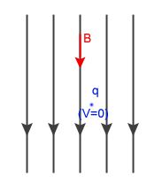
Spoczywający ładunek nie podlega sile Lorentza (F=0).
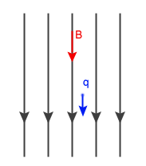
Ładunek porusza się ruchem jednostajnym prostoliniowym, zachowując początkową prędkość równoległą do linii pola (F=0).
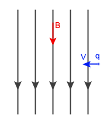
Na ładunek działa siła Lorentza.
Zwrot tej siły prowadzi za rysunek. Wyznacza się go za pomocą reguły Fleminga lub reguły lewej ręki. Taka siła nie powoduje zmiany wartości prędkości, lecz zakrzywia tor ruchu (ładunek zacznie poruszać się po okręgu). Jest więc siłą dośrodkową.
REGUŁA LEWEJ RĘKI
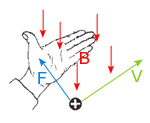
Jeżeli lewą dłoń ustawimy tak, by cztery palce wskazywały kierunek ruchu ładunku dodatniego (w przypadku ładunku ujemnego cztery palce ustawiamy w drugą stronę), a linie pola (wektor indukcji) kłują dłoń od wewnątrz, to odchylony kciuk wskazuje zwrot siły Lorentza.
REGUŁA FLEMINGA
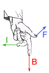
- siła Lorentza
- wektor indukcji
- natężenie płynącego prądu
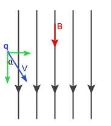
Ruch tego ładunku można traktować jako złożeniu II-go i III-go przypadku. Ładunek będzie się poruszał po linii śrubowej.
Siła elektrodynamiczna
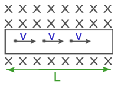
Na rysunku:
oznacza, iż linie pola (linie indukcji magnetycznej) są prostopadłe, skierowane w głąb
oznacza, iż linie pola są prostopadłe, skierowane od rysunku
Na przewodnik, w którym płynie prąd elektryczny, umieszczony w polu magnetycznym działa siła, zwana siłą elektrodynamiczną. Wyprowadźmy wzór na nią.
Na każdy ładunek znajdujący się w przewodniku działa siła Lorentza, a więc na cały przewodnik działa siła:
Za prędkość podstawiamy iloraz drogi przez czas:
l - długość przewodnika
Wiedząc, że natężenie prądu wyraża się wzorem:
uzyskujemy wzór na siłę elektrodynamiczną:
Wzajemne oddziaływanie przewodników z prądem
Przewodnik, przez który przepływa prąd wytwarza w swym otoczeniu pole magnetyczne. Jeżeli w polu tym zostanie umieszczony drugi przewodnik z prądem, to pole pierwszego będzie nań oddziaływało z siłą elektrodynamiczną. Równocześnie jednak drugi przewodnik wytwarza pole magnetyczne oddziałujące z określoną siłą elektrodynamiczną na pierwszy.
Zbadajmy przypadek wzajemnego oddziaływania dwóch jednometrowych i równoległych przewodników, będących w odległości 1 m od siebie, jeżeli płyną w nich prądy o wartości natężenia równej 1A.
Jeżeli prądy płyną w kierunkach zgodnych, to przewodniki przyciągają się, jeśli w przeciwnych, to odpychają się.
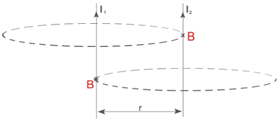
Podstawiamy do wzoru wartości liczbowe:
Wzajemne oddziaływanie przewodników wykorzystano do zdefiniowania jednostki 1A.
|
Moment magnetyczny
Jedną z wielkości używanych przy opisie sił w polu magnetycznym jest moment magnetyczny. Aby wyprowadzić jego wzór, rozważmy, jakie siły działają na przewodnik w postaci zwoju, umieszczony w jednorodnym polu magnetycznym.
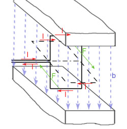
Dla uproszczenia zakładamy, że przewodnik ma kształt prostokątnej ramki, przez którą przepływa prąd o natężeniu I, przy czym może się ona obracać wokół własnej osi w ten sposób, że jej ramiona a, obracając się przecinają linie pola i są do nich zawsze prostopadłe. Na każde z ramion o długości a działa wówczas siła elektrodynamiczna, przy czym wartość tej siły w położeniu przedstawionym na rysunku linią ciągłą wynosi:
B - indukcja pola magnetycznego
Siły F, działające na obydwa ramiona a ramki, tworzą parę sił, której moment obraca ramkę wokół osi. W miarę obrotu ramki wartość momentu zmniejsza się według zależności:
W przypadku, gdy ramka przyjmie położenie przedstawione na rysunku linią przerywaną, moment siły staje się równy zeru. Uwzględniając, że iloczyn ab jest równy powierzchni S ramki, otrzymujemy zależność:
gdzie iloczyn
nosi nazwę momentu magnetycznego. Jednostką momentu magnetycznego jest
Elementy takie jak ramka z prądem, solenoid lub igła magnetyczna, charakteryzujące się określoną wartością momentu magnetycznego, noszą nazwę dipoli magnetycznych.
Cyklotron (akcelerator cykliczny)
Jest to akcelerator cykliczny, w którym stosunkowo ciężkie cząstki (protony, jądra, jony) przyspieszane są polem elektrostatycznym o napięciu rzędu 100kV i wysokiej częstości, istniejącym pomiędzy dwoma duantami, czyli płaskimi wydrążonymi półwalcami. Cząstki poruszają się po torach spiralnych, dzięki istnieniu stałego, silnego pola magnetycznego prostopadłego do płaszczyzny przyspieszenia.
Wiedząc, iż pole elektryczne przyspiesza cząstkę, a pole magnetyczne zakrzywia tor ruchu, możemy wyprowadzić wzór na częstotliwość:
Podstawiamy wzór na prędkość liniową w ruchu po okręgu:
Zasada działania oparta jest na obserwacji, że przy pominięciu efektów relatywistycznych (tj. wzrostu masy przyspieszanych cząstek) częstotliwość obiegu cząstek naładowanych po torze kołowym Wk (częstość cyklotronowa) nie zależy od ich energii, co pozwala łatwo zsynchronizować częstość obiegu cząstek z częstością zmian pola elektrycznego We, tak że:
e - ładunek przyspieszanej cząstki
m - masa cząstki
H - wartość bezwzględna wektora natężenia pola magnetycznego
c - prędkość światła
Cyklotron był najwcześniejszym akceleratorem cyklicznym. Pierwszy został skonstruowany przez E. Lawrence'a i M. Livingstone'a w Kalifornii w 1931 roku.
Ograniczeniem energii osiąganych za pomocą cyklotronu są efekty relatywistyczne wpływające na opóźnianie się cząstek o dużych energiach względem zmian pola, co doprowadza do utraty efektywności przyspieszania. Częściowo można temu zaradzić zwiększając pole magnetyczne wraz z promieniem, co prowadzi do konstrukcji nazywanej cyklotronem izochronicznym.
W Polsce pierwszy cyklotron uruchomiony został w latach powojennych na Uniwersytecie Jagiellońskim, następnie został przeniesiony do Instytutu Fizyki Jądrowej (IFJ, również w Krakowie), gdzie był modernizowany i pracował do początku lat 90., osiągając energię protonów równą 3MeV. Od lat 60. w IFJ pracuje większy cyklotron, pozwalający osiągać dwukrotnie wyższe energie protonów i przyspieszać cząstki alfa do energii 29MeV.
PODZIAŁ AKCELERATORÓW
Akceleratory dzielimy na:
- akceleratory liniowe (cząsteczki przyspieszone poruszają się po liniach prostych)
- akcelerator Cockcrafta-Wultona
- akcelerator van de Graafa
- akceleratory wiązek przeciwbieżnych (collider)
- akceleratory cykliczne (poruszają się po okręgu)
- betatron
- cyklotron
- mikrotron
- synchroton